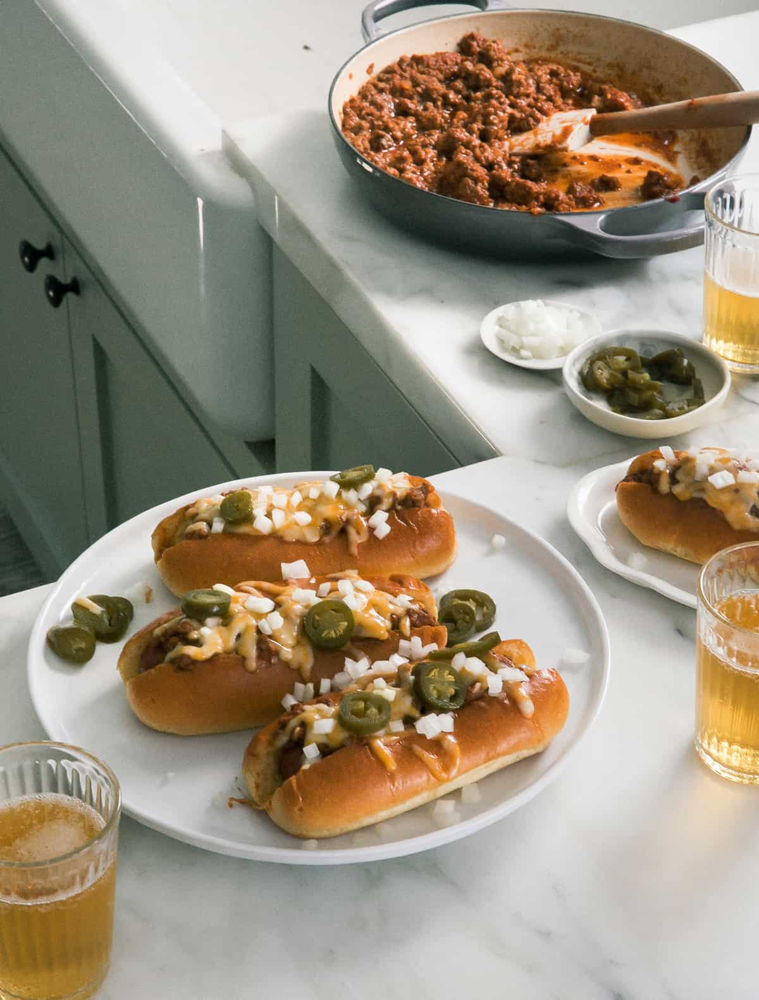

Chili Cheese Dogs

Description
I’ve had chili cheese dogs on my mind recently so I decided to make a version that didn’t scare me. Sometimes hot
dogs can scare me a little.
This is why making hot dogs at home is the best case scenario for me. I can ensure that I’m eating hot dogs that
are nitrate-free and are made with ingredients I can pronounce.
The chili might be my favorite thing ever (hello vegan chili and pumpkin chili) Both are SO good.
Ingredients
- Hot Dogs – I use all beef hot dogs that are nitrate-free. Use what you like!
- Ground beef – I’m using a 85%/15% ground beef because I want full flavor.
- Onions – We are making these oh so good.
- Cheese – Im using Monterey Jack but feel free to use what you like.
- Buns – I’m going fancy and using brioche buns but again, use your favorite hot dog buns.
Steps
- Start by making the chili. In a saucepan, cook down the onions until they’ve softened then add the beef
along with the spices and cook until the beef has browned. Add the rest of the ingredients and simmer for a
few minutes to let the flavors come together.
- Heat up the hot dogs. You have options, whatever your preference is. I like to grill them for the additional
flavor and the way the grill marks look.
- Toast the buns. This is important! You want the buns to not just be squishy soft all the way through,
toasting them with not only add flavor but also help them stand up to the chili.
- Assemble! To assemble the chili dogs, place a hot dog in a bun, top with mustard, then finish with the
chili, cheese, and onion.